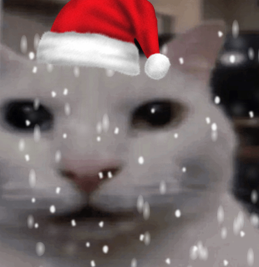

Matthew: I’m a junior electrical engineering student at the University of Central Florida. Currently, I serve as an Undergraduate Learning Assistant (ULA) for Linear Circuits 1 and as the Community Service Chair at the IEEE UCF Student Chapter. Outside of academics, I enjoy cooking, working on cars, weightlifting, and exploring all things related to electrical engineering.
Kevin: I am Kevin.
You may contact Matthew at his email address, giannacco@ucf.edu.
You may contact Kevin at his email address, hoang.ho@ucf.edu.
You can always send us a question and we will do our best to read it and reply back quickly. We will also create any new or missing resources.
Connect with Matthew on LinkedIn!
Connect with Kevin on LinkedIn!